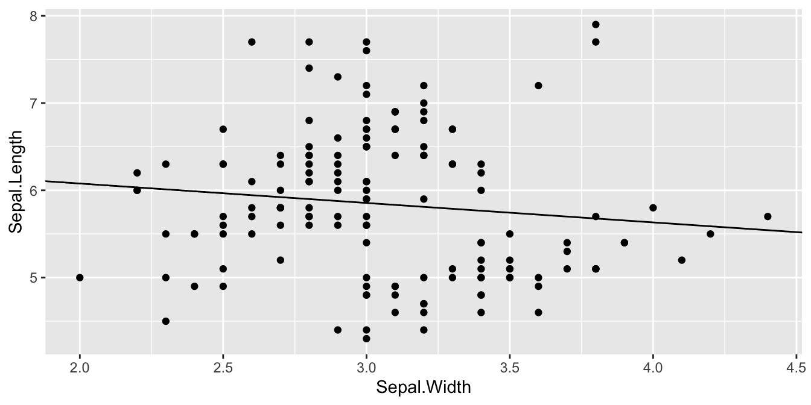

vignettes/introduction_marginal_effects.Rmd
introduction_marginal_effects.RmdThere is no common language across fields regarding a unique meaning of “marginal effects”. Thus, the wording throughout this package may vary. The most generic description of what ggeffects does, is: ggeffects allows us to interpret a statistical model by making predictions generated by the model when one holds the non-focal variables constant and varies the focal variable(s).
In the following, some examples are shown to make clear what is actually calculated and returned by the package’s functions ggpredict(), ggemmeans() and ggeffect(), and how this differs from other functions or software packages that calculate marginal effects.
First, we fit s simple linear model and look at the coefficient of the only predictor, Sepal.Width.
data(iris)
model1 <- lm(Sepal.Length ~ Sepal.Width, data = iris)
coef(model1)["Sepal.Width"]
#> Sepal.Width
#> -0.2233611In this basic example, the coefficient we see here is the slope of the regression line:
library(ggplot2)
ggplot(iris, aes(x = Sepal.Width, y = Sepal.Length)) +
geom_point() +
geom_abline(intercept = coef(model1)["(Intercept)"],
slope = coef(model1)["Sepal.Width"])
For this simple linear model, the slope for the regression line is always the same for each value of our predictor, Sepal.Width. We can check this by generating predictions of our model.
library(ggeffects)
pr <- ggpredict(model1, "Sepal.Width")
pr
#> # Predicted values of Sepal.Length
#>
#> Sepal.Width | Predicted | 95% CI
#> --------------------------------------
#> 2.00 | 6.08 | [5.73, 6.43]
#> 2.20 | 6.03 | [5.74, 6.33]
#> 2.60 | 5.95 | [5.75, 6.14]
#> 3.00 | 5.86 | [5.72, 5.99]
#> 3.20 | 5.81 | [5.67, 5.95]
#> 3.40 | 5.77 | [5.60, 5.93]
#> 3.80 | 5.68 | [5.42, 5.94]
#> 4.40 | 5.54 | [5.11, 5.97]“Predictions” returned by ggeffects are essentially interpretations of regression coefficients in terms of comparison. We can compare how much our outcome (Sepal.Length) changes on average, when the focal term (in this case: Sepal.Width) varies: For example, what is the average value of Sepal.Length for observations with a value of, say, 2 for Sepal.Width, compared to observations with a 3 for Sepal.Width?
ggeffects returns predictions for representative values of the focal term(s), hence you see many predicted values (including confidence intervals) in the output for the different values of the focal term(s).
If we now look at the differences between any two predicted values, we see that these are identical:
# Difference between predicted values for Sepal.Width = 2 and 3
pr <- ggpredict(model1, "Sepal.Width [2,3]")
round(diff(pr$predicted), 4)
#> [1] -0.2234
# Difference between predicted values for Sepal.Width = 3 and 4
pr <- ggpredict(model1, "Sepal.Width [4,5]")
round(diff(pr$predicted), 4)
#> [1] -0.2234Furthermore, the difference of predicted values that differ by 1 in the focal term (Sepal.Width), equals the regression coefficient. This is because the interpretation of a regression coefficient can be seen as average difference in the outcome, “comparing two individuals that differ in one predictor [a difference of 1 for Sepal.Width in this case], while being at the same levels of all other predictors.” (Gelman, Hill, Vehtari 2020, page 494). We don’t have any other predictors in this example, so we don’t go into deeper details here.
Thus, the association - or effect - between Sepal.Length and Sepal.Width is the same for every value of Sepal.Width. This means, that for simple linear models, the regression coefficient is also the marginal effect:
The marginal effect here is at the same time the average marginal effect, because on average, the effect of Sepal.Width on Sepal.Length is -0.2234: when Sepal.Width changes by 1, the value of Sepal.Length changes by -0.2234 on average.
For the next example, we simulate some data for a logistic regression model.
set.seed(123)
y <- rbinom(300, 1, c(.3, .7))
x <- rnorm(300, 2)
y_1 <- y == 1
x[y_1] <- x[y_1] + rnorm(sum(y_1), 3)
d <- data.frame(x, y)
model2 <- glm(y ~ x, family = binomial(), data = d)
coef(model2)["x"]
#> x
#> 2.640768The regression coefficient for x (on the logit-scale) is 2.6408. However, for a logistic regression, this “slope” is not constant across all values of x, because we have non-linear transformations here. We can make this more clear by looking at the predicted probabilities:

As we can see, we have some differences in the case of logistic regression models compared to the linear regression model:
We no longer have the predicted average difference or mean in our outcome, but rather the predicted probability that our outcome is 1 for a given value of x.
Due to the non-linear transformation, the slope differs at different values for x, thus, the “marginal effect” or “association” (in terms of probabilities) is not constant across values of x.
While the regression coefficient in linear models is already on the response scale, and hence the (average) marginal effect equals the regression coefficient, we have different scales in logistic regression models: the coefficients shown in summary() are on the logit-scale (the scale of the linear predictor); exponentiating that coefficient (i.e. exp(coef(model2))) returns an odds ratio; predictions are easy to interpret in terms of probabilities, as mentioned under 1).
First, let’s look at the average marginal effect of x in this model:
margins(model2)
#> x
#> 0.154The result indicates “the contribution of each variable on the outcome scale”, i.e. the “change in the predicted probability that the outcome equals 1” (see vignettes from the margins package). On average, a unit-change in x changes the predicted probability that the outcome equals 1 by 15.40%.
More general speaking: The marginal effect represents the difference of (two) predictions for an (infinitesimal) change in x (the focal term). The average marginal effect represents the average slope of that predictor.
I personally find it less intuitive to interpret average marginal effects, in particular for non-Gaussian models, because it is harder to understand an average effect where we actually have varying effects across the range of the focal term. Instead, I rather prefer to look at predictions at different values of the focal term(s), which is what ggeffects returns by default:
ggpredict(model2, "x")
#> # Predicted probabilities of y
#>
#> x | Predicted | 95% CI
#> -----------------------------
#> -2 | 0.00 | [0.00, 0.00]
#> 0 | 0.00 | [0.00, 0.00]
#> 2 | 0.03 | [0.01, 0.07]
#> 4 | 0.84 | [0.73, 0.91]
#> 6 | 1.00 | [0.99, 1.00]
#> 8 | 1.00 | [1.00, 1.00]
#> 10 | 1.00 | [1.00, 1.00]For x = -2, the predicted probability that y = 1, as estimated by our model, is zero. For x = 10, the probability is 100%. In essence, what ggpredict() returns, are not average marginal effects, but rather the predicted values at different values of x. This makes clear that marginal effects require predictions: The marginal effect would be the difference between any two adjacent predicted values (if these are close enough in case of non-linear relationship between our outcome and the focal variable).
Following these lecture-notes, marginal effects are based on predictions. The main difference is how “effects” is understood. In particular in econometrics, “marginal effects” are understood as predictions for numerical derivates of the focal term, which is achieved by Stata’s margins, dydx(varname) or R’s margins::dydx(). However, marginal effects at specific values, in Stata margins, at(var1 = 5, var2 = 10), are considered as predictions - and these kind of “marginal effects” (or: predictive margins in Stata language) is what ggeffects returns.
Thus, the language used throughout this package considers marginal effects as predictions, i.e. predicted values. Depending on the response scale, these are either predicted (mean) values, predicted probabilities, predicted (mean) count (for count models) etc. Currently, ggeffects does not calculate average marginal effects.
Sometimes, the term estimated marginal means is used as well, because this is commonly used in software packages likes SPSS, but there is also a prominent R package, emmeans.
But what is the difference, for instance, between simple means and “estimated marginal” means? And why “marginal”? The idea behind marginal effects, and estimated marginal means, is that the estimated (or predicted) average outcome value is adjusted for the remaining co-variates. We shall demonstrate this with another linear model.
We first simulate some fake data, where we want to see how income affects wellbeing. The dataset also includes a variable on health, which we will use later.
set.seed(123)
wellbeing <- runif(300, 0, 100)
income <- rep(NA, 300)
health <- runif(300, 30, 80)
health[wellbeing < 50] <- health[wellbeing < 50] - rnorm(sum(wellbeing < 50), 30, sd = 10)
income[wellbeing < 25] <- sample(1:3, sum(wellbeing < 25),
replace = TRUE, prob = c(.7, .2, .1))
income[wellbeing >= 25 & wellbeing < 50] <- sample(1:3, sum(wellbeing >= 25 & wellbeing < 50),
replace = TRUE, prob = c(.5, .3, .2))
income[wellbeing >= 50 & wellbeing < 75] <- sample(1:3, sum(wellbeing >= 50 & wellbeing < 75),
replace = TRUE, prob = c(.35, .35, .3))
income[wellbeing >= 75] <- sample(1:3, sum(wellbeing >= 75),
replace = TRUE, prob = c(.1, .2, .7))
income <- factor(income)
levels(income) <- c("low", "middle", "high")
d <- data.frame(income, wellbeing, health)We now fit a linear model, to look at the regression coefficients:
library(parameters)
model3 <- lm(wellbeing ~ income, data = d)
model_parameters(model3)
#> Parameter | Coefficient | SE | 95% CI | t(297) | p
#> -----------------------------------------------------------------------
#> (Intercept) | 35.45 | 2.16 | [31.20, 39.70] | 16.42 | < .001
#> income [middle] | 15.50 | 3.50 | [ 8.61, 22.38] | 4.43 | < .001
#> income [high] | 33.11 | 3.30 | [26.61, 39.60] | 10.03 | < .001We can see that the average wellbeing is 15.5 points higher for people from middle incom groups compared to those from lower income groups. People with higher income even have on average a 33.11 points higher wellbeing than people with lower income.
We can fairly easy calculate the predicted average wellbeing by summing up the intercept and the coefficient for each middle and high income. This is what ggpredict() (or ggemmeans() or ggeffect()) also does:
ggpredict(model3, "income")
#> # Predicted values of wellbeing
#>
#> income | Predicted | 95% CI
#> -----------------------------------
#> low | 35.45 | [31.22, 39.68]
#> middle | 50.95 | [45.55, 56.34]
#> high | 68.55 | [63.66, 73.45]In this example, the “marginal effects” (or estimated marginal means) equal the simple average values of wellbeing by the different income groups:
aggregate(d$wellbeing, list(d$income), mean)
#> Group.1 x
#> 1 low 35.44815
#> 2 middle 50.94551
#> 3 high 68.55464However, we may conclude that the wellbeing is not only depending on income, but also on other factors, such as health status. health would be a confounder that impacts the association between income and wellbeing.
model4 <- lm(wellbeing ~ income + health, data = d)
compare_parameters(model3, model4)
#> Parameter | model3 | model4
#> -------------------------------------------------------------
#> (Intercept) | 35.45 (31.20, 39.70) | 16.37 (11.08, 21.65)
#> income (middle) | 15.50 ( 8.61, 22.38) | 11.41 ( 5.38, 17.45)
#> income (high) | 33.11 (26.61, 39.60) | 24.44 (18.54, 30.33)
#> health | | 0.58 ( 0.46, 0.69)
#> -------------------------------------------------------------
#> Observations | 300 | 300Now we see that the effect of income on wellbeing is less pronounced when we take the health status into account. This “adjustment” for confounding variables can be accounted for when calculating marginal effects (or estimated marginal means). These predicted average values for wellbeing are now no longer the same as the simple group means, due to the adjustment:
ggpredict(model4, "income")
#> # Predicted values of wellbeing
#>
#> income | Predicted | 95% CI
#> -----------------------------------
#> low | 39.26 | [35.51, 43.00]
#> middle | 50.67 | [45.98, 55.35]
#> high | 63.69 | [59.34, 68.05]
#>
#> Adjusted for:
#> * health = 39.52This is the difference between simple “means” and “estimated marginal means”. The latter are “adjusted” means, based on the model that adjusts for confounders. Thus, these predicted means are “marginalized” (i.e. averaged) over the levels of all covariates. This is what is meant by the sentence in the first paragraph, that ggeffects is “making predictions generated by the model when one holds the non-focal variables constant”. However, there are different way how to hold non-focal terms constant, and this is how ggpredict() differs from ggemmeans() and ggeffect() (described in detail in this vignette).
We can demonstrate the same aspect of “adjusted predictions” we have seen above for linear model, for logistic regression models. Therefore, we generate some fake data again.
smoking <- data.frame(
sex = factor(c("male", "female", "female", "male", "female", "female",
"male", "female", "female", "male", "male", "female",
"female"),
levels = c("male", "female")),
smoking = factor(c("no", "yes", "yes", "yes", "yes", "no", "no", "yes",
"yes", "no", "no", "no", "yes"),
levels = c("no", "yes")),
age = c(10, 45, 50, 40, 45, 12, 14, 55, 60, 10, 14, 50, 40)
)Looking at the proportions of the table, we see that many more female persons are smoking compared to male persons:
100 * proportions(table(smoking$sex, smoking$smoking), margin = 1)
#>
#> no yes
#> male 80 20
#> female 25 75In this case, we have no “estimated” or “predicted” means or averages, but predicted probabilities. According to the table, the probability of being female and smoking is 75%, while it’s only 20% for male persons. We get the same values for the predicted probabilities, if we run a logistic regression model:
model5 <- glm(smoking ~ sex, family = binomial(), data = smoking)
# Looking at the odds ratio for "sex"
model_parameters(model5, exponentiate = TRUE)
#> Parameter | Odds Ratio | SE | 95% CI | z | p
#> ------------------------------------------------------------------
#> (Intercept) | 0.25 | 0.28 | [0.01, 1.69] | -1.24 | 0.215
#> sex [female] | 12.00 | 16.61 | [1.03, 333.21] | 1.79 | 0.073
# Looking at the predicted probabilities for "sex"
ggpredict(model5, "sex")
#> # Predicted probabilities of smoking
#>
#> sex | Predicted | 95% CI
#> ---------------------------------
#> male | 0.20 | [0.03, 0.69]
#> female | 0.75 | [0.38, 0.94]The reference category for sex is male, so we can estimate the average marginal effects for female persons using margins():
margins(model5)
#> sexfemale
#> 0.55The interpretation is like stated above: the change in the predicted probability that the outcome equals 1 for female persons is 0.55, i.e. 55%. This is exactly the difference between the predicted probabilities for male and female persons.
Looking at the age distribution in the sample, we might conclude that our model produces biased estimates, and therefor biased predictions. Remember the high odds ratio of our model, as shown above. Now we include age as possible confounder in our model.
model6 <- glm(smoking ~ sex + age, family = binomial(), data = smoking)
# Looking at the odds ratio for "sex"
compare_parameters(model5, model6, exponentiate = TRUE)
#> Parameter | model5 | model6
#> -------------------------------------------------------------
#> (Intercept) | 0.25 (0.03, 2.24) | 5.52e-03 (0.00, 2.98)
#> sex (female) | 12.00 (0.80, 180.97) | 0.36 (0.00, 116.05)
#> age | | 1.18 (0.97, 1.45)
#> -------------------------------------------------------------
#> Observations | 13 | 13
# Looking at the predicted probabilities for "sex"
ggpredict(model6, "sex")
#> # Predicted probabilities of smoking
#>
#> sex | Predicted | 95% CI
#> ---------------------------------
#> male | 0.65 | [0.03, 0.99]
#> female | 0.39 | [0.03, 0.94]
#>
#> Adjusted for:
#> * age = 34.23As we can see, the female persons were much older than the male persons. Smoking is also associated with age and it is less likely that people smoke when they are children or younger teenagers. Adjusting for age reveals that the probability of smoking is actually higher for male persons, not female.
ggpredict() holds non-focal terms constant at their mean value (if these are continuous) or at their reference level (for factors). Thus, effects returned by ggpredict() are actually conditional effects (i.e. these are conditioned on certain (reference) levels of factors). However, ggeffect() and ggemmeans() return marginal effects, since the effects are “marginalized” (or “averaged”) over the levels of factors.
There are many different terms: conditional and marginal effects, marginal effects and (estimated) marginal means, effects and predictions, … At this point, it is still not definitely clear which wording to use for ggeffects. Whenever “marginal effects” are mentioned here, it is about model-based predictions at different values of the focal variable(s), holding the non-focal variables constant at their mean, reference level or averaged over factor levels. However, I’m revising the wording in the package documentation and vignettes, to avoid the term “marginal effects” as good as possible…